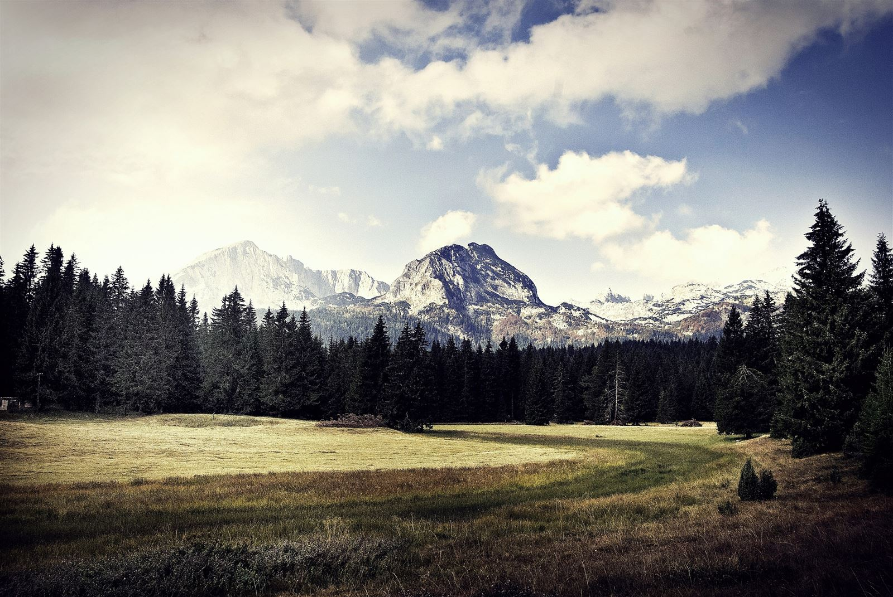

- 12:30Aterrem a Tivat, recollim el cotxe (Carwiz, 14:00) i marxem cap al nord.
- DinarDinar de camí, dues opcions: Parades interessants de camí: per decidir.
- CompraSúper a Žabljak (tanca a les 21:30). Per l'esmorzar de demà, Pekara Bakery (obert cada dia de 7 a 23h): recomanen el burek i el iogurt líquid balcànic.
- 18:30Checkin Vacation home Andjelic, ens acomodem.
- EntradesEntrada al Parc Durmitor, comprem la de 3 dies (6 €/persona) a la taquilla d'accés a Crno Jezero: així ja la tenim per demà.
- VespreSopadeta (+ tuppers/entrepans per demà), jocs de taula i a mimir.
